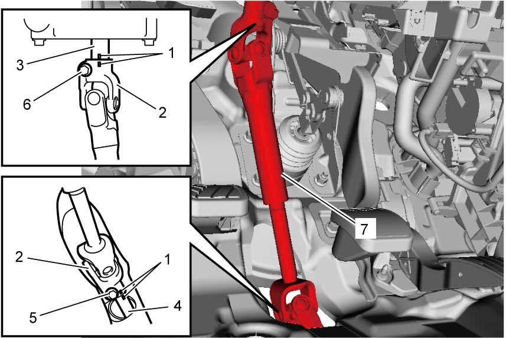
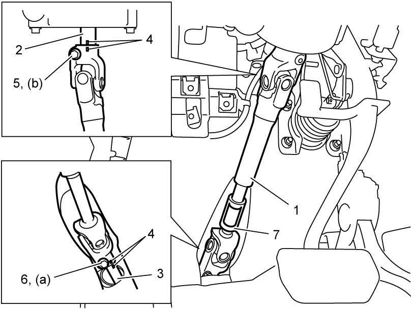

6B
| Steering Lower Shaft Removal and Installation |
NOTICE:
If the steering wheel is turned with the steering lower shaft removed, the neutral setting of the contact coil may be disturbed.
If it is turned in either direction more than about two and a half turns, the contact coil will break.
Never turn the steering wheel with the steering lower shaft removed.
Removal
1)Remove steering joint cover. 
2)Remove instrument panel undercover.
3)Make matchmarks (1) on the following parts for correct reinstallation.
•Steering lower shaft joint (2) and steering column (3)
•Steering lower shaft joint and pinion shaft (4)
•Steering lower shaft joint and pinion shaft (4)
4)Loosen steering lower shaft joint bolt (steering column side) (6) and remove steering lower shaft joint bolt (pinion shaft side) (5).
NOTE:
Turn steering wheel a little for removal of steering lower shaft joint bolt (pinion shaft side).
5)Set front wheels in straight ahead position.
6)Set ignition “LOCK”.
For ignition switch model, remove key.
For ignition switch model, remove key.
7)Remove steering lower shaft joint bolt (steering column side).
8)Remove steering lower shaft (7).


 "Expand image")
Installation
NOTICE:
The steering lower shaft joint bolts are pre-coated with friction stabilizer. If the bolts are reused, they may work loose.
Never reuse the steering lower shaft joint bolts.
NOTE:
New steering lower shaft is supplied with spacer.
Remove the spacer after installation of the shaft to the vehicle.
1)Check that vehicle’s front wheels are in straight ahead position.
2)Install steering lower shaft (1) as follows.
a)Fit joint parts of steering lower shaft onto steering column (2) and pinion shaft (3) while aligning matchmarks (4).
b)Install new steering lower shaft joint bolt (pinion shaft side) (6) of steering lower shaft and then joint bolt (steering column side) (5) temporarily.
NOTE:
Turn steering wheel a little for installation of steering lower shaft joint bolt (pinion shaft side).
c)Tighten steering lower shaft joint bolt (pinion shaft side) to specified torque.
d)Tighten steering lower shaft joint bolt (steering column side) to specified torque.
e)Remove spacer (7) if new steering lower shaft is installed.

 "Expand image")
3)Install instrument panel undercover.
4)Install steering joint cover.